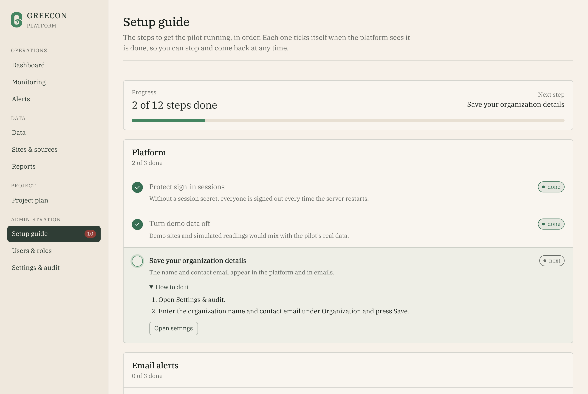
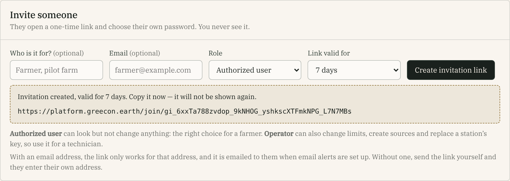
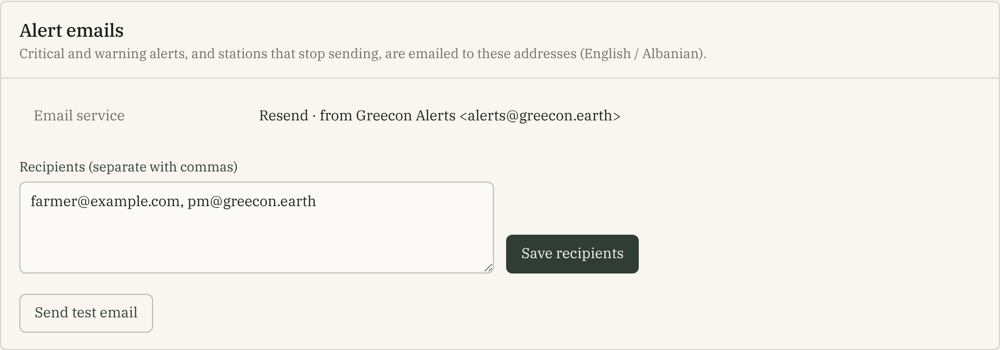
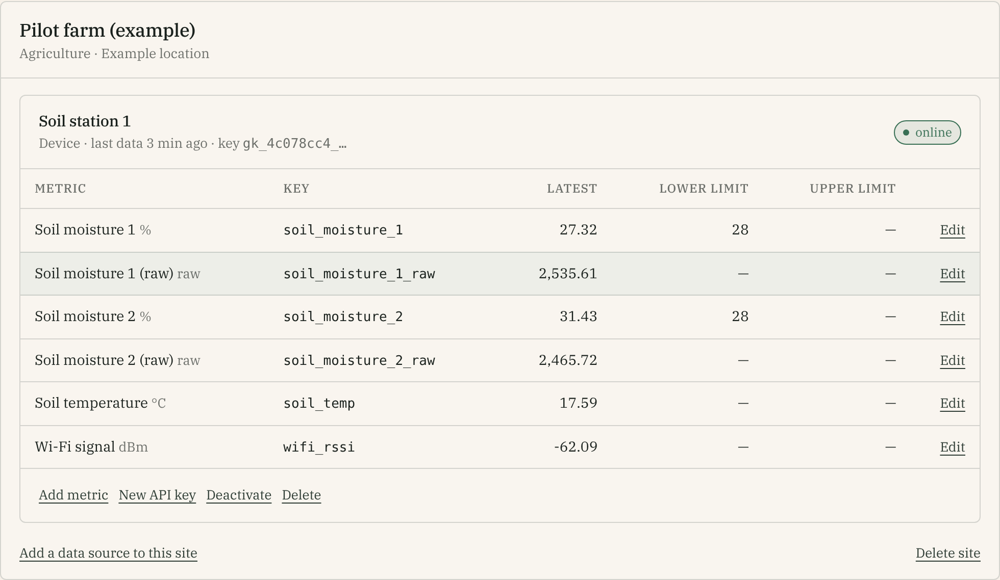
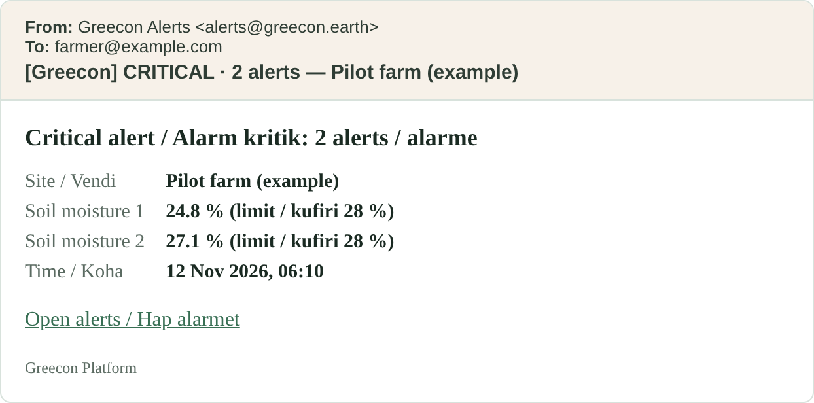
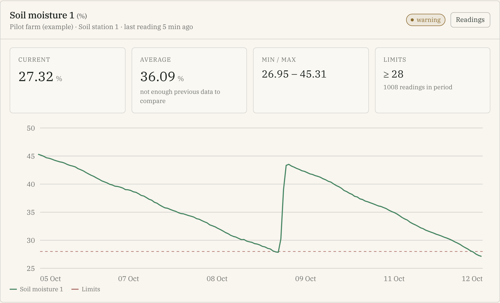

Products to buy, accounts to open and a step-by-step plan to take one function of Greecon Platform, soil moisture monitoring with alerts, from the office onto a real farm between October and December 2026.
Programme
Startup Albania 2026, phase F1 · activity A 2.2 “Pilot, test and validate the platform in real conditions”
Application
SA2026008101 · Greecon shpk · project ends 18 December 2026
Prepared for
The project manager (budget line 1.1)
Technical lead
Eridon Manuka, CEO and systems engineer
Version
1.2 · 18 October 2026 · code in greecontech/pilot
Prices, plans and delivery times in this guide are estimates collected on 12 October 2026. They are marked “≈”. Confirm them before you pay.
How to use this guide
You do not need to be an engineer. Every step says who does it, how long it takes and how you know it is done. Do the phases in order; the first two run in parallel.
1The missionWhat we pilot, what already works, how success is measured
2Plan and rolesTen-week timeline, deadlines, who does what
AProducts to buyHardware, tools, subscriptions, budget scenarios
BStep-by-step planPhases 0 to 6, from decisions to the final report
CRunning the pilotWeekly check, weekly log, troubleshooting
DEvaluation and reportingSuccess criteria, farmer interview, evidence
Companion document:Station build tutorial, a hands-on guide for the person who builds and installs the station, from an empty desk to a working unit. This guide tells you what to do and when; the tutorial shows how.
1 · The mission
Startup Albania funds Greecon to prove the platform in real conditions. The platform can already monitor energy, water and agriculture sites. For the pilot we deliberately test only one function:
The pilot in one sentence
Measure soil moisture at a real farm, show it clearly, and email the farmer when the soil becomes too dry.
One function done reliably is stronger proof than many done half-way. It also gives the grant its evidence: real data, a real user, a measured result.
Success criteria (agreed in the pilot plan)
Criterion
Target
Data availability
At least 95% of expected readings received (one reading every 10 minutes per sensor)
Alert correctness
Every drop below the agreed limit raises an alert, and there are no false alerts caused by faulty sensors
Usefulness
The farmer confirms that the alerts and the moisture trend helped decide when to irrigate
Stability
The station runs for 4 weeks without manual intervention
Already done · checked 12 Oct
Platform builds and its 13 automated tests pass.
A device key, ingestion, charts and alerts were run end to end against a real database.
Email alerts in English and Albanian, plus a “station offline” email. New this month.
The ESP32 station firmware compiles with the current toolchain.
Not done · this is your work
No hardware bought, no partner farm chosen.
Email service account and domain verification.
The firmware has never run on a real board. The bench test (step 3.4) is the first time.
The dashboard is English only. The emails are bilingual.
How the pieces fit
Figure 1. The station sends a reading every 10 minutes. The platform stores it, draws it, checks it against the limit and emails people when it crosses.
2 · Plan and roles
Today is Monday 12 October. The pilot window is November and December; the project ends Friday 18 December. The 4-week stability test needs a start date no later than 13 November, so the first four weeks decide everything.
12 Oct
19 Oct
26 Oct
2 Nov
9 Nov
16 Nov
23 Nov
30 Nov
7 Dec
14 Dec
0–1 Decide, survey, order
2 Cloud, email, rehearsal
Parts in transit
3 Build, bench, burn-in
4 Install at the farm
5 Pilot runs (4 weeks)
6 Evaluate and report
planned workwaiting or buffer
Deadlines and decision gates
Date
Milestone
If it slips
Wed 14 Oct
Hardware ordered with express shipping (sensors and boards)
Every day of delay moves the install by a day. Ordering is the critical path.
Fri 23 Oct
Cloud, email and rehearsal done. Parts in hand: target 23 Oct
Gate A, Wed 28 Oct: parts still missing → buy from a second supplier and tell Eridon.
Mon 2 Nov
Bench test and 72-hour burn-in passed
Gate B: failed → Eridon decides whether to fix it or swap in the spare board or sensor.
Fri 6 Nov
Station installed and sending. The 4-week clock starts.
Gate C, Fri 13 Nov: not installed → 4 weeks can no longer finish before 18 Dec. Tell Eridon and agree a shorter run.
Fri 4 Dec
4 weeks complete (if installed on 6 Nov)
Latest possible end: Fri 11 Dec (install on 13 Nov).
Fri 11 Dec Fri 18 Dec
Evaluation finished and results drafted for D5, D6, D7 · project end
–
Who does what
Role
Person
Responsible for
PM
Project manager
Owns this plan: purchasing, the farmer relationship, accounts, the weekly check and log, the evaluation and the report.
TL
Eridon Manuka
Technical lead: platform, firmware, wiring, calibration, troubleshooting. Approves any change to the parts list.
Farmer
Partner farm contact
Hosts the station, answers alerts, gives 10 minutes of feedback a week.
Marketing
Mimoza Xhetani
Turns the result into a case study (activity A 2.1). Needs photos and a quote from the farmer.
Three rules
Order first. Shipping is the longest wait in the project. Cloud setup can happen while parts travel.
Never send a key or password in chat, email or GitHub. Use the password manager (Appendix 1). A key that leaks is replaced in one click, but only if you know it leaked.
Hands off during the 4 weeks. The stability test counts manual interventions. Fix real faults, write each one in the log, and change nothing else.
Part A · Products to buy
This is the list for two stations and spares: one station at the farm, one spare or second plot. Prices are ≈ estimates in euros before shipping; those from shop listings were read on 12–13 October.
A.1 Hardware
“Cart” says where to buy it: 1 Tirana Electronics (local), 2 DFRobot (abroad), 3 other local shops. Details in A.6.
Item
Qty
≈ € each
≈ € total
Cart
ESP32 DevKitC, ESP32-WROOM-32 The classic ESP32 on a ready-made board. Do not swap for S2, S3 or C3 boards: the firmware uses pins that differ. Listed locally at 1,200 lek.
3
8–12
24–36
1
required
DFRobot SEN0193 capacitive soil moisture sensor US$5.90 each, US$5.70 from 5 pieces. Chosen over cheap boards: the two-prong type sold locally corrodes in weeks, and the €2 “v1.2” clones often misbehave at 3.3 V.
6
5–6
30–36
2
required
Waterproof DS18B20 temperature probe, plus a 4.7 kΩ resistor DFRobot DFR0198 US$6.90, or kit KIT0021 US$7.50 with an adapter module and cable.
3
6–7
20–23
2
required
IP65 junction box ≈150×110×70 mm with 3–4 cable glands
2
10
20
3
required
USB data cable for flashing (not a charge-only cable) and a 5 V USB power adapter
2+1
3–5
13
3
required
Heat-shrink tubing, jumper wires, solder, perfboard, silicone sealant, cable ties
1 lot
10–15
10–15
1, 3
required
Solar kit: 6 V 3–6 W panel, 18650 cell and holder, protected TP4056 charger, and a 5 V boost converter Instead of the USB adapter where there is no mains. A charger board alone cannot power the ESP32: Eridon designs and bench-tests the 5 V stage first (Build tutorial, section 9).
2
20–30
40–60
3
if no mains
4G router with a data SIM Teltonika RUT241 ≈ €148 net, ≈ €179 with VAT (Bechtle). A budget pocket 4G router such as the TP-Link M7200 costs less (≈ €40–80) but is less rugged outdoors.
1
40–180
40–180
3
if no Wi-Fi
SHT31 air temperature and humidity breakout (greenhouse)
2
5
10
2
optional
How many sensors, and why
Each station has two moisture sensors: one at 10–20 cm, one at 20–40 cm. The shallow one reacts to irrigation first; the deeper one shows the reserve in the root zone. Six are listed because two are spares: cheap soil sensors fail more often than anything else on the station.
A.2 Tools
Borrow if the team has them, buy if not: a multimeter (≈ €15–25), a soldering iron with solder (≈ €15–30), a heat gun or lighter for heat-shrink, a drill with a step bit for the cable glands, small screwdrivers, a laptop with a USB port (Arduino IDE), a phone with a Wi-Fi analyzer app.
A.3 Services and subscriptions
Service
What for
≈ Cost
Note
Railway, Hobby plan
Hosts the platform and its PostgreSQL database
US$5 a month with US$5 of usage included; usage beyond that is billed
Budget US$5–15 a month and check Usage weekly. Confirm at railway.com/pricing.
Resend, free plan
Sends the alert emails
€0: 3,000 emails a month, 100 a day, 1 domain
We expect a few emails a week. Railway blocks SMTP on Hobby, so Resend’s web API is used.
Domain greecon.earth
Address platform.greecon.earth and the email sender
€0 (already owned)
Someone with access to its DNS settings must be available.
Mobile data SIM
Only with a 4G router
Ask the operator
The station sends under 1 MB a day (≈ 30 MB a month): the smallest plan is enough. Tourist SIMs expire after 2–3 weeks; get a company SIM with a monthly plan from Vodafone Albania or One Albania. Consumer prepaid plans quoted in travel blogs are ≈ 1,500–2,500 lek; business and IoT plans could not be found, so ask the operators’ business desks.
Password manager
Keeps keys and passwords
≈ €0–5 a user
Bitwarden or 1Password. Turn on two-factor sign-in for Railway, GitHub and Resend.
A.4 Budget scenarios
Scenario
Parts, ≈ €
+30% shipping, courier and import VAT
Plus, not included
A · Wi-Fi at the plot and mains power
117–143
152–186
≈ US$15–45 hosting
B · Wi-Fi at the plot, solar power
147–193
191–251
≈ US$15–45 hosting
C · Solar power and a 4G router
187–373
243–485
≈ US$15–45 hosting + SIM plan
Optional SHT31 sensors (≈ €10) and tools are not included. Hosting is three months of Railway. The +30% is a cautious allowance applied to everything; parts bought in Tirana (Cart 1) carry no import costs.
Grant eligibility: confirm before you rely on it
The application budget has no separate hardware line. The closest is 4.1 Technology development (“development and optimisation of the platform, AI functions and technical performance”). Ask Startup Albania in writing whether pilot hardware, hosting and the SIM can be charged there. Keep every invoice in the name of Greecon shpk and file proof of payment with the grant documents.
A.5 Buying rules
Do not substitute the board or the soil sensor without asking Eridon. The firmware reads the sensors on pins 34 and 35 and is calibrated for the SEN0193 type.
Slow shipping would cost the whole pilot. Marketplace shipping from Asia to Albania often takes 2–5 weeks. Use express shipping for the sensors, and buy in Tirana whatever Tirana has.
Count and test on arrival. Report a dead-on-arrival part within the supplier’s return window.
Invoices in the name of Greecon shpk for everything, local or foreign (see the grant note above).
A.6 Where to buy: three carts
No single shop sells everything. The parts split naturally into what Tirana has, what must come from abroad, and what you must find locally. Shop pages were read on 13 October; listings can be out of date, so confirm stock and price by phone or WhatsApp before you travel or pay.
Cart 1 · Tirana Electronics (tiranaelectronics.al) · buy this week
Address Rruga Myslym Shyri, Tirana · Phone and WhatsApp +355 68 263 5962 · Email info@tiranaelectronics.al Delivery all of Albania. Tirana within 12 hours of order processing, 200 lek up to 2 kg. Other cities 2–3 working days, 300 lek up to 2 kg, +50 lek per extra kg. The shop says it takes no responsibility once the parcel leaves its warehouse: inspect on receipt.
Item as listed
Qty
Listed, lek
Note
ESP32 ESP32D ESP32-WROOM-32D “Development Board”
3
1,200
The listing has no photo and does not mention a USB socket. Ask for a photo and confirm it is a ready-made board with a USB port and pin headers, like an ESP32 DevKit. Alternative: ESP32 Basic Starter Kit, 3,500 lek (board, breadboard, wires, USB cable).
Heat-shrink tubing
1
600
To seal the sensor electronics.
DuPont jumper cables, 40-pin (M/F, M/M, F/F)
3 sets
12 each
For the bench build.
Solder wire SOLDEX 0.75 mm, 200 g
1
1,800 / 2,160
The page shows two prices without saying which applies.
Pro’sKit SI-131G soldering iron
1
2,500
Only if the team has none.
Digital meter
1
–
Ask for a simple multimeter. The only meter listed is a clamp meter (Pro’sKit MT-3202, 3,500 lek).
Do not buy the shop’s “Soil Moisture Sensor Module”, 300 lek
It is a 60×30 mm probe on an LM393 comparator board, the classic two-prong type. The exposed metal corrodes in wet soil within weeks, and the readings drift long before it fails. The pilot needs the capacitive sensor in Cart 2.
Not found on the pages I could read: capacitive soil sensors, DS18B20 probes, SHT31, junction boxes, cable glands, resistors, perfboard, solar parts, 4G routers. I read the three pages of the electronic-components category and the first page of its sensor and module categories.
Cart 2 · DFRobot (dfrobot.com) · order by Wed 14 Oct
Item
SKU
Qty
Price
Gravity: Analog Capacitive Corrosion Resistant Soil Moisture Sensor 3.3–5.5 V supply, 1.2–2.5 V output, PH2.0-3P connector with cable.
SEN0193
6
US$5.90 each; $5.80 from 3, $5.70 from 5, $5.50 from 10
Waterproof DS18B20 temperature sensor, stainless steel probe 6×35 mm, 90 cm cable Sensor only, or the kit with an adapter module and cable. The page does not state the resistor value in the kit: keep a 4.7 kΩ resistor to follow the wiring table.
DFR0198 or KIT0021
3
US$6.90 sensor only; US$7.50 kit
Subtotal about US$55–60 before shipping. DFRobot ships by DHL and FedEx and quotes 3–7 business days to Eastern Europe, free shipping only above US$150. Its shipping page does not name Albania, and terms are FOB Shanghai: you pay all import duty, taxes and courier fees. Email store@dfrobot.com before paying:
Subject: Delivery to Tirana, Albania, company order
Hello, we are Greecon shpk, a company in Tirana, Albania. Do you ship to Albania
by DHL or FedEx? Please quote shipping cost and delivery time for 6 x SEN0193
and 3 x DFR0198, and send a pro-forma invoice in the company's name.
Backups if DFRobot cannot ship: DigiKey, Mouser and Farnell/element14 stock the same DFRobot parts. For example, Mouser’s Austrian site lists the DFR0198 at about €5.93, and the ESP32-DevKitC-32E is listed at about £7.67 (DigiKey UK) and €8.77 (Mouser France). I could not load their shipping pages: enter the Tirana address in the cart to see whether and how they deliver. AliExpress delivers to Albania but economy shipping takes about 15–35 days: use it for spares only.
Cart 3 · Other local shops · enquire this week (not verified)
Item
Where to ask
IP65 junction box ≈150×110×70 mm and PG7/PG9 cable glands
An electrical wholesaler (“materiale elektrike”). Bring the dimensions.
4.7 kΩ resistors, perfboard
Ask Tirana Electronics: neither appeared on the pages I read. Or any electronics components shop.
5 V USB adapters and a data cable; silicone sealant; cable ties
A phone-accessory shop and a hardware shop.
4G router and SIM, only if the plot has no Wi-Fi
The business desks of Vodafone Albania and One Albania. Or order the Teltonika RUT241 from abroad (≈ €148 net).
Solar panel 6 V 3–6 W, 18650 cell, protected TP4056 board, and a boost converter that accepts at least 3 V in and gives 5 V out
A local solar or electronics shop. Only after Eridon has approved the solar design: not every boost module starts from one lithium cell.
Importing as a company is not the same as shopping as a private person
The official Albanian customs site (dogana.gov.al) exempts internet purchases delivered by postal consignment up to €22 (gifts between individuals up to €45), but only for non-commercial consignments. It does not say how company imports are treated. Plan for a commercial import: a customs declaration, 20% VAT and possibly duty, handled by the courier’s customs broker.
Put the order in the company’s name and give the courier the company’s NIPT.
Keep the invoice, the customs declaration and the courier’s receipt together for the grant file.
Ask the accountant how VAT is treated before you order.
Send everything from abroad in one parcel, so you clear customs once.
Part B · Step-by-step plan
PM = project manager · TL = technical lead (Eridon) · Time = effort, not waiting time. Tick each step when its “Done when” is true.
0
Decide and agree
Mon 12 – Wed 14 Oct
Everyone knows the scope, the farm and the owner of each step.
#
What to do
Who
Time
Done when
0.1
Read this guide. Meet Eridon for 30 minutes: confirm the pilot is one function (soil moisture and alerts) and who owns each phase. Out of scope: the energy and water modules, automatic irrigation control, more than one farm.
PM, TL
1 h
Scope and owners are written at the top of the weekly log.
0.2
Choose the partner farm and plot. Good candidates: irrigated crops or a greenhouse, a farmer who will give 10 minutes of feedback every week, a plot reachable by car, and mains power or open sun.
PM
1–3 days
A named farmer and a named plot.
0.3
Get the farmer’s agreement in writing (an email is enough): permission to install, access for visits, weekly feedback, and permission to use anonymous results and, if they agree, photos and their name in a case study.
PM
1 day
A written “yes” is saved in the project folder.
0.4
Ask Startup Albania in writing whether pilot hardware, hosting and the data SIM can be charged to budget line 4.1, and which proofs they need. Do not wait for the answer to order the sensors; keep invoices in Greecon shpk’s name.
PM
30 min
The question is sent. The answer is filed when it arrives.
1
Survey the plot and order
Tue 13 – Wed 14 Oct · hardware in hand by Fri 23 Oct (latest Wed 28 Oct)
The right parts for this plot are on their way, and delivery is tracked.
#
What to do
Who
Time
Done when
1.1
Survey the exact spot (a phone call with the farmer can replace a visit). Wi-Fi: is there signal at the station’s spot, stronger than −75 dBm on a Wi-Fi analyzer app? Power: a mains socket within reach, or a sunny, unshaded place for a panel? Where does the irrigation spray reach? Is the spot safe from animals and machinery?
PM
2 h
Answers written down. Scenario A, B or C chosen (A.4).
1.2
Place the three carts in A.6. Cart 1: call or WhatsApp Tirana Electronics and ask for a photo of the ESP32 board. Cart 2: email DFRobot first (the template is in A.6), then order the sensors in one parcel with express shipping. Cart 3: start the enquiries.
PM
3 h
Cart 1 collected or ordered. Cart 2 ordered. Cart 3 shops identified. Eridon has approved the list.
1.3
If a 4G router is needed, ask the business desks of Vodafone Albania and One Albania for a router and a data plan in the company’s name, and buy the one that covers the plot best.
PM
2 h
SIM active; the plan cost is noted.
1.4
Put every order in a tracker with its expected date. Chase on Mon 19 Oct and Mon 26 Oct. Count everything on arrival.
PM
15 min a week
All parts received, counted and working. (Gate A: Wed 28 Oct.)
2
Cloud, email and rehearsal
Mon 12 – Fri 23 Oct · runs while the parts travel
The platform is live on the internet and email alerts are proven. Nothing here needs hardware.
#
What to do
Who
Time
Done when
2.1
Ask Eridon whether the platform is already deployed on Railway. If it is, reuse it: skip to 2.5, and set SEED_DEMO and SIMULATOR to false, then delete the demo sites under Sites & sources.
PM
10 min
Decision noted.
2.2
Open a Railway account with the company email. Add a payment card, choose the Hobby plan and turn on two-factor sign-in.
PM
30 min
You can create a project.
2.3
In Railway choose New Project → Deploy from GitHub repo and select the Greecon Platform repository. Then + New → Database → PostgreSQL in the same project. Railway builds the Dockerfile by itself.
PM, TL
30 min
The app service builds without errors.
2.4
On the app service, set the variables in Appendix 2. For SESSION_SECRET, let the password manager generate 40+ random characters. Use a strong ADMIN_PASSWORD.
PM
30 min
The deployment turns green.
2.5
Settings → Networking → Generate Domain. Open https://<your-domain>/api/health: it must show "status":"ok". Sign in as the administrator and change the password under Account. Then open Setup guide in the sidebar (Figure 2): it lists the remaining steps and ticks each one itself.
PM
15 min
Health check is ok. Admin password changed and saved. Setup guide opens in the sidebar.
2.6
Recommended: add the custom domain platform.greecon.earth. Railway shows a DNS record; the person who manages the DNS of greecon.earth creates it. Then set APP_URL to the new address.
PM, DNS owner
1 h + wait
The platform opens on platform.greecon.earth with a padlock.
2.7
Resend: create an account at resend.com, add the domain greecon.earth, create the DNS records it lists and press Verify. Create an API key with sending access.
PM, DNS owner
1 h + up to a day
The domain shows “Verified”.
2.8
In Railway set RESEND_API_KEY and ALERT_EMAIL_FROM and redeploy. In the platform open Settings & audit → Alert emails, enter the recipients, press Save recipients and then Send test email (Figure 4).
PM
20 min
The test email arrives in every recipient’s inbox. Check spam too.
2.9
Create accounts by invitation.Users & roles → Invite someone: enter the person’s email, choose Authorized user for the farmer (Operator only for a technician), press Create invitation link, and send the link (Figure 3). It is shown once, and emailed too when email is set up. They open it and choose their own password. Add the administrators (Eridon and the PM) under Add user with a password.
PM
15 min
Each person has signed in once. The invitation shows “accepted”.
2.10
Rehearse the whole chain with no hardware.Sites & sources: add the site “Pilot farm” (sector Agriculture) and a Device source called “Rehearsal”; copy its key. Run the emulator (Appendix 5). Then set Lower limit 28 on Soil moisture 1 and 2 (Figure 5) and run it again with --dry.
PM, TL
1 h
An alert shows on the dashboard. One email arrives for both sensors. A normal reading closes the alert.

Figure 2. Setup guide on a brand-new platform: 2 of 12 steps done. The number beside it in the sidebar is the steps still open. Every step ticks itself when the platform sees it is done. (Example data.)

Figure 3. Users & roles → Invite someone. The link is a one-time secret, shown once. Only a hash of it is stored, so a lost link is revoked and replaced. (Example link.)
Which role for whom
Administrator
Eridon and the PM. Everything, including users and settings.
Operator
A technician only. Can also change limits, create sources, replace a station’s key and deactivate it. Either of those last two silently stops the station and counts against “4 weeks without intervention”.
Authorized user
The farmer. Sees everything, can change nothing. The farmer does not need to acknowledge alerts: they close by themselves when the soil is moist again.

Figure 4. Settings & audit → Alert emails. The service line must show the sender address. Save the recipients, then send a test email. (Example data.)

Figure 5. Sites & sources. A metric appears after the first upload. Click Edit on it to set the lower limit. (Example data.)
3
Build the stations and bench test
When the parts arrive (target 23 Oct, latest 28 Oct) – Mon 2 Nov
Each station works on a table for 72 hours before it goes near a field. This is the first time the firmware runs on a real board.
#
What to do
Who
Time
Done when
3.1
Unpack and check against the order. Plug each board into a computer: a serial port must appear. Touch-test each sensor and probe.
TL, PM
1 h
Parts list ticked, spares set aside.
3.2
Install the Arduino IDE 2. Boards Manager:esp32 by Espressif Systems3.3.12. Library Manager: OneWire 2.3.8, DallasTemperature 4.0.6, Adafruit SHT31 Library 2.2.2 (it adds Adafruit BusIO). These exact versions compiled the firmware on 12 Oct. Follow the Build tutorial (a separate PDF) for every click.
TL
1 h
The sketch compiles.
3.3
Wire each station as in Appendix 3, soldered on perfboard (a breadboard shakes loose in a field). Seal the top of each soil sensor’s electronics with heat-shrink or sealant.
TL
3 h a station
Wiring checked against the table by a second person.
3.4
Copy config.example.h to config.h. Enter the Wi-Fi name and password, API_URL (platform address + /api/ingest) and the Rehearsal key. Upload. Open Serial Monitor at 115200 baud: you should see the readings and POST 201.
TL
1 h
Readings from the real board appear on the platform. Write down anything unexpected.
3.5
Calibrate each moisture sensor. Hold it in dry air and note soil_moisture_1_raw on the platform (DRY). Stand it in a glass of water up to the white line (WET). Enter both in config.h and upload again.
TL
1 h
Air reads about 0%, water about 100%.
3.6
Burn-in: leave each station running for 72 hours, indoors. If the farm will use a 4G router, set it up at the office first (its Wi-Fi name and password as in config.h) and burn in against it, so nothing needs re-flashing at the farm.
TL
3 days of waiting
At least 410 of 432 expected readings per metric (95%), and the source shows online. (Gate B: Mon 2 Nov.)
3.7
Delete the Rehearsal source (Sites & sources → Delete) so test data does not pollute the pilot. Add one source per station, “Station 1” and “Station 2”, each with its own key. Put each key into its station’s config.h, upload, and store the key in the password manager.
PM, TL
1 h
Pilot data starts clean. A lost or leaked key can be replaced per station.
3.8
Mount each board in its IP65 box with the cable glands facing down. Label it with the station name and the PM’s phone number. Pack the kit: laptop, USB cable, multimeter, cable ties, tape, sealant, spare sensors and board, a phone with a hotspot.
TL, PM
2 h
Kit packed and ticked.
4
Install at the farm
Target Tue 3 – Fri 6 Nov · latest Fri 13 Nov (Gate C)
The station is sending reliably, the farmer has the alert emails, and the 4-week clock is running.
#
What to do
Who
Time
Done when
4.1
Go to the plot with Eridon (or a technician) and, if possible, the farmer. Fix the box in the shade, above the irrigation spray, cable glands facing down. Plug it in, or fix the solar panel facing south with no shade.
TL, PM
1 h
The station powers on.
4.2
Place the sensors in the root zone: one at 10–20 cm, one at 20–40 cm (or in two spots). Push each in up to the white line with firm contact and no air gaps. Keep the electronics above the soil. Loop each cable downward so water cannot run into the box.
TL
30 min
Sensors stand firm and straight.
4.3
Wait 15 minutes. On the platform, Sites & sources must say “last data just now”. Check the Wi-Fi signal metric: it must be above −80 dBm. If not, move the router or station, or add an extender, before you leave.
TL, PM
20 min
Readings arrive. Signal is above −80 dBm.
4.4
Agree the lower limit with the farmer. Start at 25–30% (we suggest 28%) and enter it on both moisture metrics. Ask: “When do you irrigate today, and how do you decide?” Write the answer in the log.
PM, farmer
20 min
Limits saved. The farmer’s current practice is recorded.
4.5
Check that the farmer created their account from the invitation (it shows “accepted”). Show them the dashboard and the alert email (Figure 6). Hand over the farmer card (Appendix 4) with the PM’s phone number. Confirm the test email arrived on the phone the farmer actually uses.
PM
30 min
The farmer can sign in, and has received a test email on their phone.
4.6
Take photos of the station, the sensor placement and the plot. Write “Pilot start” and the date in the weekly log. This starts the 4-week clock.
PM
15 min
Log entry made. Photos filed.

Figure 6. The email the farmer receives when two sensors cross their limit together. One message, English and Albanian, with a link to the alerts. (Example data.)
5
Run the pilot
Four weeks from the install day (6 Nov → 4 Dec)
Collect clean evidence. Keep the routine small and regular; do not tinker.
#
What to do
Who
Time
Done when
5.1
Every Monday do the weekly check (Part C) and add one line to the weekly log.
PM
30 min a week
The log has a line for every week.
5.2
Every week call the farmer for 10 minutes: Which alerts came? What did you do? Any false alarm? Any dry spell without an alert?
PM
10 min a week
Feedback noted next to the week’s log line.
5.3
Every Friday export the readings: Data → Export CSV. Save the file in the shared project folder. This is your backup.
PM
10 min a week
A dated file is saved.
5.4
Do not touch the station or the settings unless something is broken. Write every manual fix in the log with the date and the reason.
All
–
Interventions are listed. Zero is the target.
5.5
On a “Station offline” email, phone the farmer first (power? router?) and use the troubleshooting table in Part C. Visit the plot only if it stays offline for more than 24 hours.
PM, TL
as needed
Back online, or a visit is booked.
6
Evaluate and report
Mon 7 – Fri 18 Dec · evaluation finished by Fri 11 Dec
Turn four weeks of data into proof that Startup Albania can read in five minutes.
#
What to do
Who
Time
Done when
6.1
Calculate the four success criteria as shown in Part D.
PM
2 h
The results table is filled in.
6.2
Interview the farmer (questions in Part D).
PM
30 min
Answers are written down, with quotes.
6.3
Collect the evidence: monitoring screenshots, the alert list, the CSV exports, the weekly log, the photos.
PM
1 h
One evidence folder exists.
6.4
Write the pilot results with Eridon for D5, D6 and D7. Confirm the submission dates with Startup Albania (D1 and D2 were delivered on 9 Sep 2026).
PM, TL
2 days
Drafts reviewed by Eridon.
6.5
Give Marketing the photos and the farmer’s quote for the case study (A 2.1). Agree with the farmer what happens to the station after 18 Dec: keep it running or remove it.
PM
1 h
The decision is recorded.
Part C · Running the pilot
C.1 The Monday check (30 minutes)
Check
Where to look
Healthy looks like
Station online
Sites & sources, “last data”
Less than 30 minutes ago
Data availability
Monitoring → 7 days, “readings in period” on each moisture metric
At least 958 of 1,008 (95%)
Signal
Dashboard, metric “Wi-Fi signal”
Above −80 dBm
Curves look real
Monitoring charts (Figure 7)
A smooth fall as the soil dries, a jump after irrigation. Not flat, not stuck at 0% or 100%, no spikes.
Alerts match reality
Alerts → All, then the farmer
Every dry period has an alert. Every alert has a real cause.
Email reaches the farmer
Ask the farmer
“Yes, I got it”
Hosting
Railway → Usage; /api/health
Within budget. Status ok.
Backup (Fridays)
Data → Export CSV
Dated file saved

Figure 7. What a healthy sensor looks like on Monitoring → 7 days: a slow fall, a limit line at 28%, an irrigation jump, and a new warning as the soil dries again. Illustrative data, not a real farm.
C.2 Weekly log (copy this table)
Week
Date
Readings (of 1,008)
Alerts
Farmer acted?
Manual fixes
Notes
1
2
3
4
C.3 When something goes wrong
Symptom
Likely cause and what to do
“Station offline” email, or no data
Phone the farmer: is the box powered (LED, adapter, solar battery)? Did the router restart or the Wi-Fi password change? Has the SIM run out of data? On the platform, Sites & sources shows when data last arrived.
Moisture stuck at 0% or 100%
Calibration values swapped or wrong, or a faulty sensor. Compare the _raw metrics. Eridon recalibrates or swaps in a spare.
Soil temperature missing
The 4.7 kΩ resistor is missing or the probe is wired wrongly.
Serial Monitor: POST 401
Wrong or replaced API key. POST 403: the source was deactivated. Check Sites & sources.
No alert in a dry spell
No lower limit set on that metric, or it is set too low. Open Sites & sources → Edit on the metric. Test with the emulator’s --dry option on a rehearsal source, never on the pilot station.
Alert but no email
Settings & audit shows “not configured”: the Resend variables are missing. Press Send test email. Check the farmer’s spam folder. Remember the cooldown: the same metric is emailed at most once every 6 hours. Look at the Resend dashboard’s sending log.
Too many alerts
The limit is set too high for this crop or soil. Agree a new limit with the farmer, change it once, and write the change in the log.
The platform does not open
Check /api/health. In Railway read the deployment logs and press Restart. Phone Eridon if it does not recover in 15 minutes.
A key or password leaked
Generate a new key under Sites & sources → New API key (the old one stops working at once), update the station, and note it in the log. Change leaked passwords under Account.
Be honest with the farmer
This is a pilot. The sensors and the firmware are being proven. Tell the farmer to keep checking the soil by hand and not to rely on the alerts alone. The decision to irrigate remains theirs.
Part D · Evaluation and reporting
D.1 Calculate the four criteria
Criterion
How to measure
Pass
Data availability
Monitoring → From / To (install day to today). Read “readings in period” for soil_moisture_1 and _2. Expected = days × 144.
≥ 95%. For 28 days: expected 4,032, so at least 3,830.
Alert correctness
Alerts → All. Lay every alert against the chart. Count (a) dry periods under the limit with no alert and (b) alerts with no real cause, such as a faulty sensor.
(a) = 0 and (b) = 0.
Usefulness
The farmer interview below.
The farmer says the alerts or the trend helped them decide when to irrigate.
Stability
The weekly log: number of manual interventions in 4 weeks.
4 weeks running with none.
D.2 Farmer interview (30 minutes)
Did the alerts arrive when you needed them? Was any alert late or missing?
Did you irrigate, or change when you irrigate, because of an alert or the chart? Give an example.
Were there alerts you did not understand or did not trust? Why?
Which did you use more: the email, or the dashboard? What would you remove or add?
Did the system save you time, water or a visit to the plot? Roughly how much?
Would you keep using it after the pilot? What would you pay for it each month? (Greecon’s model sells setup plus a monthly subscription; this answer tests it.)
D.3 Evidence folder
Monitoring screenshots (7 days and the whole pilot) for each moisture metric, with the limit line visible
The alert list with the farmer’s comment next to each
CSV exports (weekly backups and the final one)
The weekly log, the interventions list and the interview notes
Photos of the station and sensor placement; the farmer’s written agreement
Invoices and proofs of payment in the name of Greecon shpk
D.4 What goes into the deliverables
ToR
Deliverable
Pilot input
D5
Functional and technical testing, and documentation of problems and improvements (month 4)
The weekly log, the interventions list, every issue found and how it was fixed
D6
Functional version of the platform, ready for testing, demonstration and piloting (month 5)
The platform address, the four criteria results, screenshots
D7
Summary report on technology development, features built and improvements (month 5)
This pilot as the validation chapter: results, farmer feedback, lessons, next steps
Appendix 1 · Accounts and secrets
Account
Used for
Owner
Keep in the password manager
Railway
Hosting and database
PM (company email)
Login, 2FA recovery codes
Resend
Alert emails
PM
Login, RESEND_API_KEY
DNS provider of greecon.earth
Platform address, email records
Whoever manages the domain
Not held by the PM; only the records are exchanged
GitHub
The platform code
Eridon
–
Platform administrators
Settings, users, sources
Eridon, PM
Each person’s own password
Station keys
Each station’s uploads
PM, TL
One key per station. Shown only once when created.
4G router and SIM
Connectivity at the plot
PM
Router admin password, SIM PIN and PUK
Farmer’s account (Authorized user)
The farmer’s sign-in, read-only
Farmer
Nothing: the farmer chose their own password from the invitation link
Rules
One person, one account. No shared passwords.
Keys and passwords never go into chat, email, documents or GitHub.
Turn on two-factor sign-in on Railway, GitHub and Resend.
If a key might have leaked, replace it at once (Sites & sources → New API key).
Appendix 2 · Railway variables
Set these on the app service under Variables. The platform runs its database migrations on every start.
Variable
Value
Required
DATABASE_URL
${{Postgres.DATABASE_URL}}, a reference to the Postgres service
yes
SESSION_SECRET
40+ random characters. Without it, everyone is signed out on every restart.
yes
ADMIN_EMAIL, ADMIN_PASSWORD, ADMIN_NAME
The first administrator, created on the first start only
yes
SEED_DEMO, SIMULATOR
false for the pilot (demo data and simulated readings off)
yes
PROJECT_START_DATE
2026-08-01 (month 1 is August 2026)
yes
APP_TIMEZONE
Europe/Tirane
yes
RESEND_API_KEY
From the Resend dashboard. Without it, no email is sent.
for email
ALERT_EMAIL_FROM
Greecon Alerts <alerts@greecon.earth>, on the verified domain
for email
ALERT_EMAIL_TO
Initial recipients, comma-separated. Change them later under Settings & audit.
optional
APP_URL
https://platform.greecon.earth, used for the links in emails
optional
ALERT_EMAIL_COOLDOWN_HOURS
Default 6: a metric is emailed at most once in this time
optional
OFFLINE_AFTER_MINUTES
Default 90: silence before the “station offline” email
optional
Appendix 3 · Station wiring
From
To the ESP32
Soil sensor 1: VCC · GND · AOUT
GPIO25 · GND · GPIO34
Soil sensor 2: VCC · GND · AOUT
GPIO25 · GND · GPIO35
DS18B20: red · black · yellow (data)
GPIO25 · GND · GPIO4, with the 4.7 kΩ resistor between data and 3.3 V
SHT31 (optional): VIN · GND · SDA · SCL
3.3 V · GND · GPIO21 · GPIO22
GPIO25 powers the sensors only while the station measures. That saves energy and slows corrosion.
The moisture sensors must use GPIO34 and GPIO35: they are ADC1 pins. ADC2 pins stop working while Wi-Fi is on.
The station wakes every 10 minutes, measures, uploads and sleeps again. It sends under 1 MB a day.
Appendix 4 · Farmer card
Print one copy for the farmer. Have a native Albanian speaker review the wording before you hand it out, and the Albanian labels in the alert emails too (src/lib/email-templates.ts). Fill in the blanks by hand.
Greecon Platform · Projekti pilot
Çfarë të bëj kur marr një alarmWhat to do when you get an alert
Hap emailin nga Greecon dhe shiko cili sensor tregon tokë të thatë.Open the Greecon email and see which sensor shows dry soil.
Kontrollo tokën me dorë në parcelë.Check the soil by hand in the plot.
Nëse toka është e thatë, ujit parcelën.If the soil is dry, irrigate the plot.
Alarmi mbyllet vetë kur toka bëhet përsëri e lagësht.The alert closes by itself when the soil is moist again.
Stacioni pa lidhje · Station offline
Kontrollo rrymën dhe Wi-Fi. Nëse nuk rregullohet brenda disa orësh, telefono.Check the power and the Wi-Fi. If it does not fix itself within a few hours, call.
Ky është një pilot: mos u mbështet vetëm te alarmet.This is a pilot: do not rely on the alerts alone.
Platforma / Platform
Email-i im / My sign-in
Menaxheri i projektit / Project manager
Tel.
Appendix 5 · Commands and addresses
Health check (opens in any browser): https://<your-domain>/api/health
Rehearsal without hardware. On a computer with Python 3, in the repository folder:
The first command sends healthy values; --dry sends values below any normal limit to test alerts. Use only the Rehearsal key, never a station’s key.
Appendix 6 · Risks and what to do about them
Risk
Why it matters
What reduces it
Parts arrive late
Every day of delay is a day less of data.
Order by 14 Oct with express shipping. Gate A on 28 Oct.
Firmware never run on hardware
Compiles, but untested on a real board.
Bench test and 72-hour burn-in before any field work (steps 3.4–3.6). Spare board.
Poor sensors
Cheap soil sensors drift or fail, causing false alerts.
SEN0193 sensors, two spares, calibration, weekly chart check.
No Wi-Fi or power at the plot
The station cannot report.
Survey first (1.1). 4G router and solar kit as fallbacks.
A dead station looks like healthy soil
Silence is not “no problem”.
The platform emails “station offline” after 90 minutes without data.
Emails land in spam
The farmer never sees the alert.
Verified domain, test email on the farmer’s own phone, ask the farmer to mark “not spam”.
Farmer loses interest
No feedback means no “usefulness” result.
Weekly 10-minute call. Choose a farmer who wants this.
Install slips past 13 Nov
4 weeks cannot finish before 18 Dec.
Gate C. Agree a shorter run with Eridon early.
Costs not eligible
The grant may not cover hardware or hosting.
Ask in writing (0.4). The sums are small. Keep invoices in Greecon shpk’s name.
Data loss or a hosting surprise
Evidence is the deliverable.
Weekly CSV backup. Weekly look at Railway usage.
Appendix 7 · Sources and what is estimated
Checked on 12 and 13 October 2026. Plans and prices change often: confirm before you pay.
Tirana Electronics: tiranaelectronics.al, including the product pages for the ESP32 board and soil moisture module, the electronic-components, sensor and module categories, and the shipping page (/transporti/).
DFRobot: SEN0193 (dfrobot.com/product-1385.html), the waterproof DS18B20 kit (dfrobot.com/product-1354.html) and the shipping terms (dfrobot.com/shipping).
Albanian customs, online purchases and postal consignments: dogana.gov.al/english/c/226/online-shopping. Commercial imports are not covered by that page.
Railway blocks outbound SMTP on Free, Trial and Hobby plans and points to HTTPS email APIs: docs.railway.com/networking/outbound-networking
Resend free plan, 3,000 emails a month, 100 a day: resend.com/pricing (sources disagree on the number of domains: confirm)
Railway Hobby, US$5 a month including US$5 of usage, from community and third-party sources: confirm at railway.com/pricing
Teltonika RUT241, about €148 net at Bechtle, about €179 with VAT.
Cheap “v1.2” soil sensor clones can carry the wrong 555 timer chip and misbehave at 3.3 V: atomic14.com/esp32/sensors/capacitive-soil
Estimates, not quotes: junction box, USB adapter, solar kit, consumables, tools and the TP-Link router come from the project’s hardware README and my own allowances. Shipping and VAT (+30%) is a planning allowance. Mobile plan prices come from travel blogs.
Not verified: whether DFRobot, DigiKey, Mouser and Farnell deliver to Albania and at what cost (their pages did not name Albania or would not load); courier lead times to Tirana; how Albanian customs treats a company’s import (rates, VAT, duty); local sources for junction boxes, solar parts and 4G routers; Startup Albania’s rules on eligible costs.